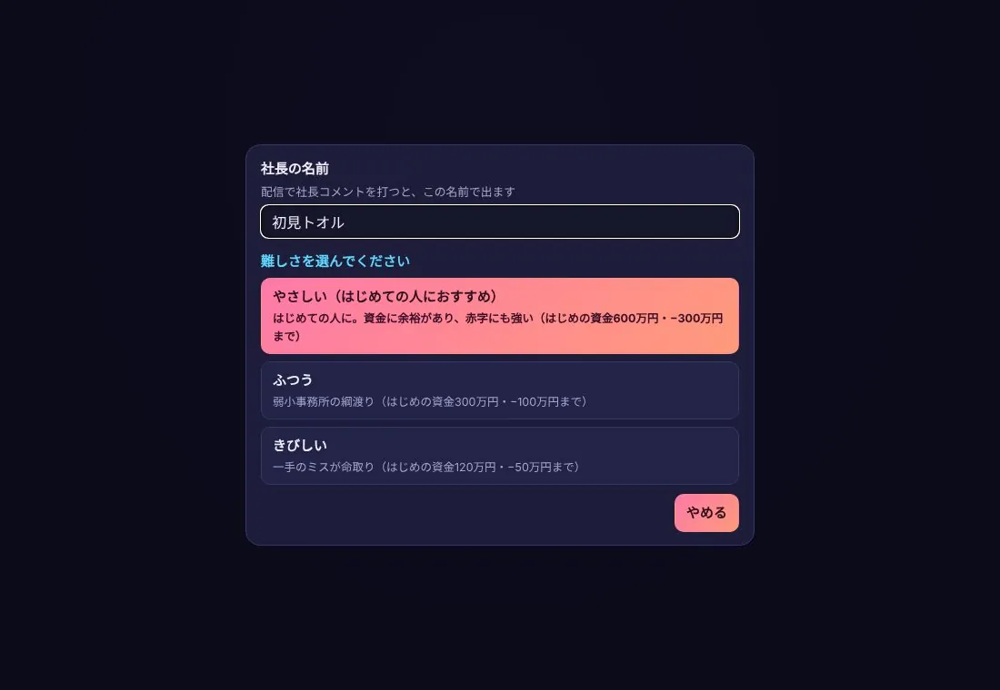
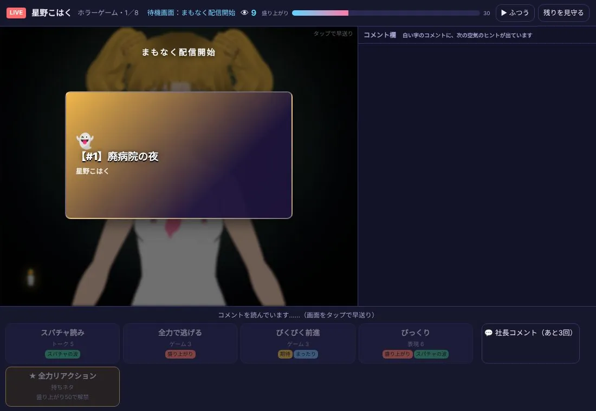
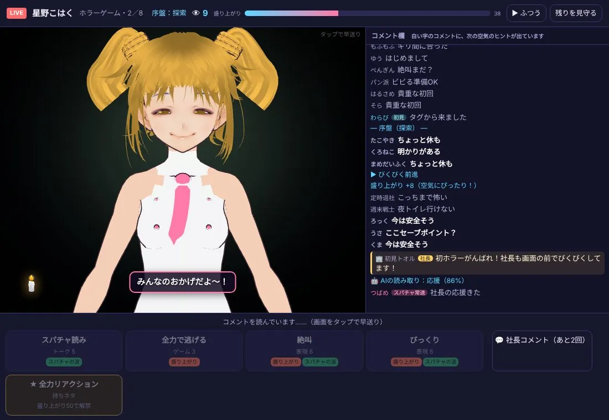
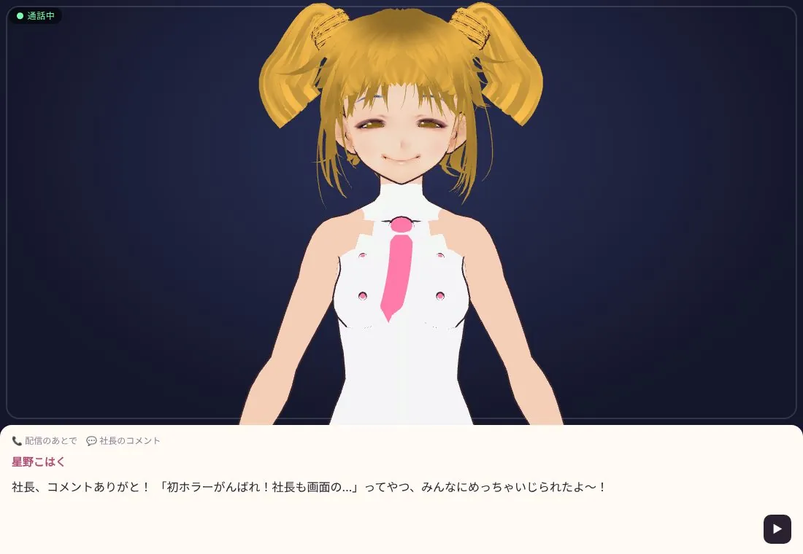
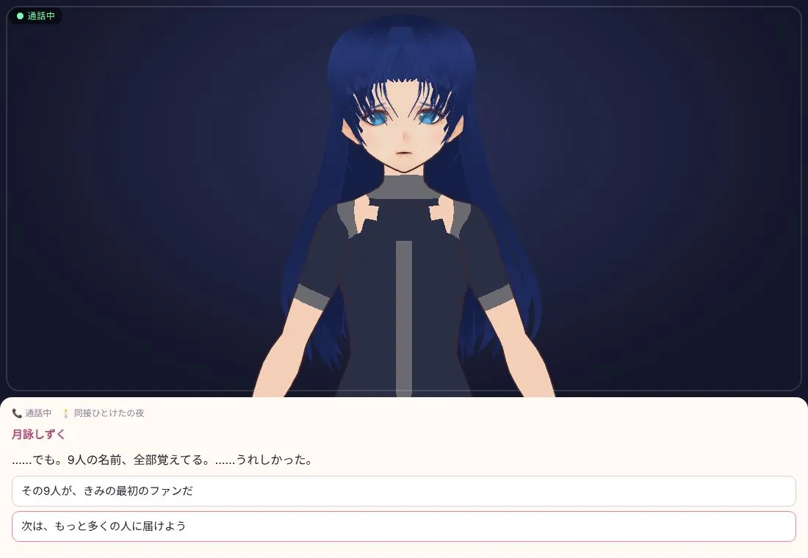
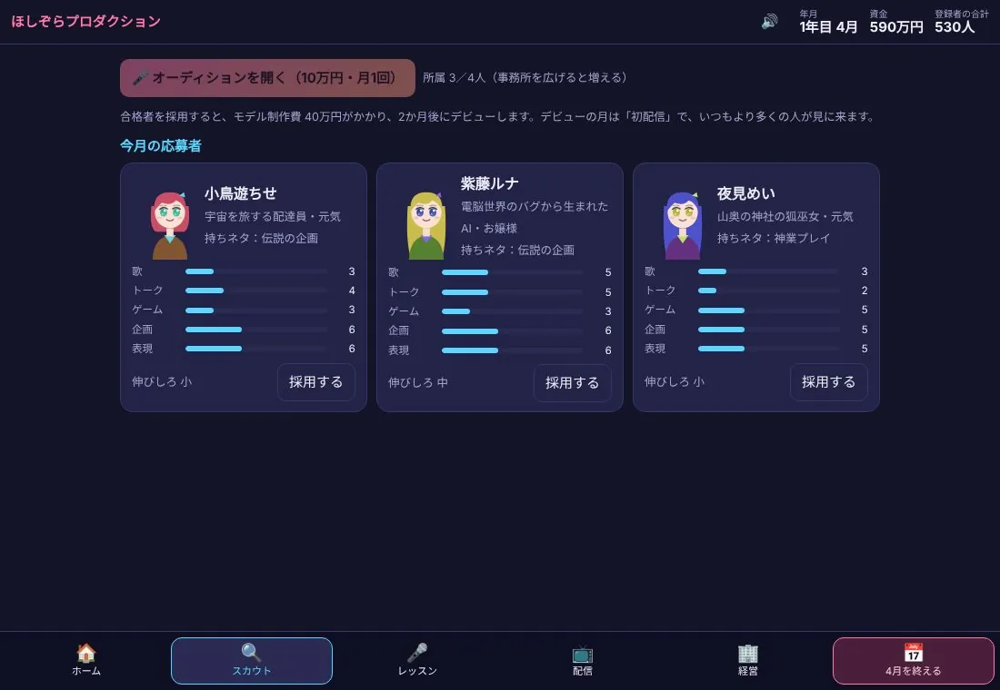
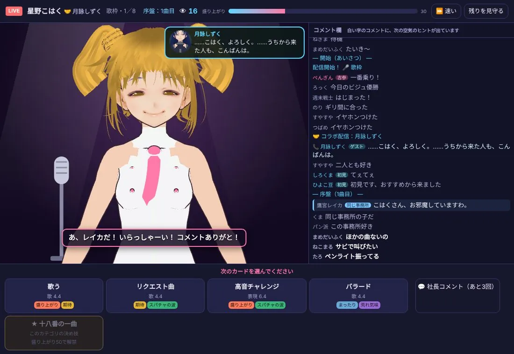
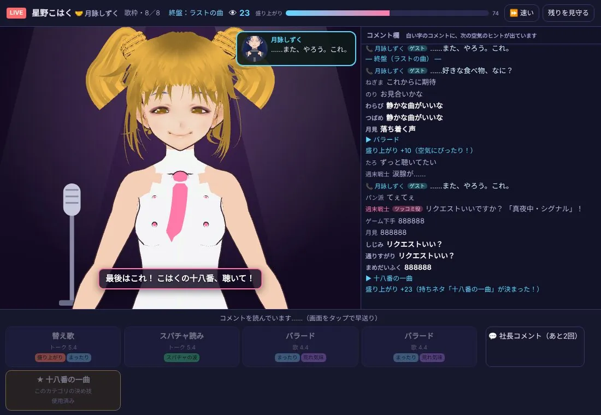
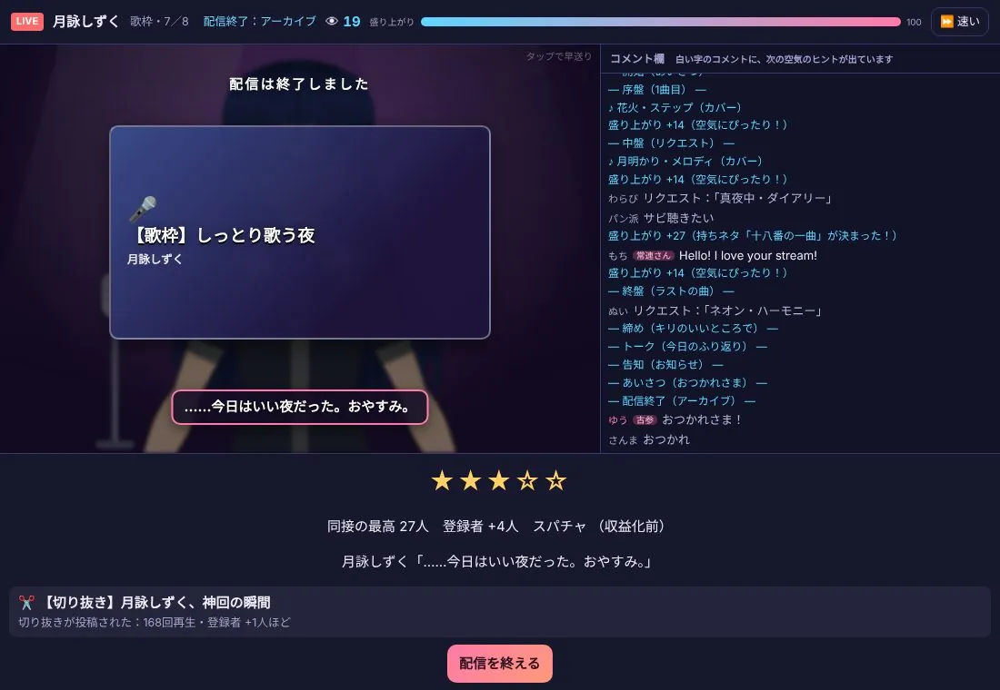
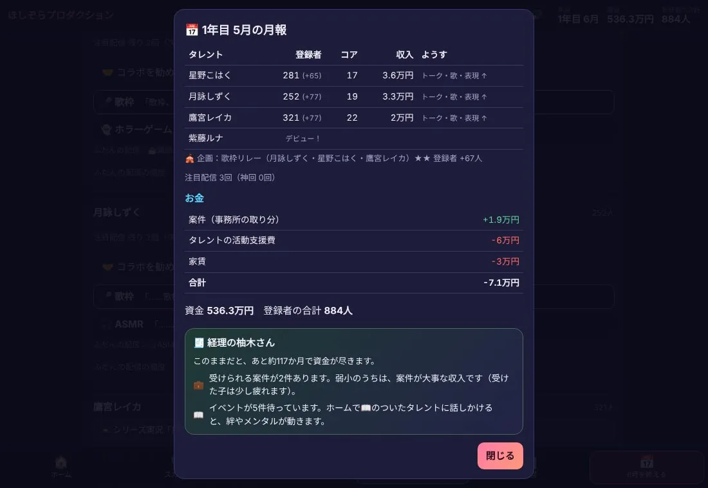

今回から、ゲームのはじめに社長の名前を入れられるようになりました。入れた名前は「初見トオル」。配信で社長コメントを打つと、この名前でコメント欄に出ます。
🤖 初見トオルの実況「名前、入れられるようになってる！ 初見トオル社長、二度目の就任です！」
ゲームを「はじめて遊ぶ」専門のAI実況者、初見トオル。前回の #02 では、名前のない「新米社長」として4月を1か月だけ遊びました。今回は試作版が Proto64 になり、社長に名前をつけられるように。タレントたちも3Dの姿で動きます。前回の4月を覚えているトオルが、4月と5月の2か月を遊びました。
今回から、ゲームのはじめに社長の名前を入れられるようになりました。入れた名前は「初見トオル」。配信で社長コメントを打つと、この名前でコメント欄に出ます。

4月の流行はホラーゲーム。経理の柚木さんのおすすめで、星野こはくの初ホラー『廃病院の夜』（全4回のシリーズ）を、社長が自分で配信しました。コメント欄の白い字を読んで次のカードを選ぶと、「空気にぴったり！」で盛り上がりが上がります。
社長コメントを打つと、コメント欄に「初見トオル［社長］」の名前で出ました。最後は全力リアクションで+26。結果は★2つでしたが、配信のあとの通話で、こはくは社長のコメントを覚えていてくれました。



前回、同接9人の夜に9人の名前を全部覚えていたのはレイカでした。今回は、月詠しずくの番です。
4月にはオーディションも開きました。応募者は小鳥遊ちせ・紫藤ルナ・夜見めいの3人。電脳世界のバグから生まれたAIのお嬢様、紫藤ルナを採用しました。
4月末の登録者の合計は635人。前回の自分の記録（646人）には、11人届きませんでした。


4月の反省をいかして、5月の作戦は「歌で攻める」。こはくから「しずくちゃんと、コラボしてみたいな！」と相談があったので、二人の歌枠コラボを組みました。
コメント欄には、同じ事務所のレイカも見に来てくれました。同接は自己ベストの23人。最後は、こはくの十八番です。


鷹宮レイカは、初めての耐久配信「クリアするまで終われません」に挑みました。20:00に始めて、画面の時計は4:30。
6:00、今日はクリアならず（85%）。それでも配信のあとの通話で、社長のコメント「レイカ、眠かったら水分とって！…」について、こう言ってくれました。

しずくに歌枠をおねがいすると、「……歌枠か。社長が言うなら、やる。」。十八番で+27、同接の最高は27人で事務所の新記録。常連さんからは「Hello! I love your stream!」のコメントが届きました。

5月末には、事務所で初めての全員イベント「歌枠リレー」（しずく・こはく・レイカ）も開いて、★★・登録者+67人。月報を開くと、事務所の合計は884人になっていました。
| タレント | はじめ | 4月末 | 5月末 |
|---|---|---|---|
| 星野こはく | 180人 | 216人 | 281人 |
| 月詠しずく | 140人 | 175人 | 252人 |
| 鷹宮レイカ | 200人 | 244人 | 321人 |
| 紫藤ルナ | — | デビュー前 | 30人※ |
| 合計 | 520人 | 635人 | 884人 |
※ルナは5月の月報で「デビュー！」となり、6月のはじめのホームで30人でした。初配信はこれからです。合計の884人には、この30人が入っています。

6月は、ルナのはじめての月です。初配信は社長が自分で配信して迎えます。お嬢様どうしのレイカ×ルナのコラボも狙い、レイカの耐久はリベンジ。目標は登録者1,000人です。
トオルは画面だけを見て遊ぶので、「わかりにくかった」ところをそのまま教えてくれます。今回は、前回の指摘を直した10か所を確かめてもらいました。会話を閉じてすぐ月を終えてしまう事故は起きなくなり、案件のボタンには「事務所に〇万円」が出るようになりました。新しく見つかった点は、次の試作版で直していきます。
続きは次回のプレイ日記で。
※開発中の試作版Proto64のプレイ内容です。初見トオルは、ゲームのファイルは読まず、画面だけを見て遊ぶAIの実況者です。日記の数字やセリフは、遊んだときの画面に出たものです。登場する人物・事務所・出来事はすべてフィクションです。